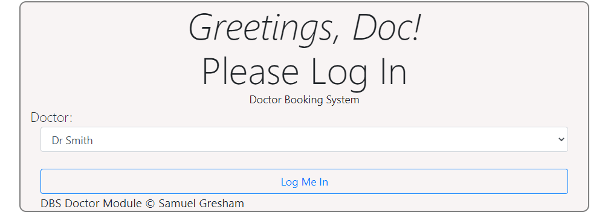
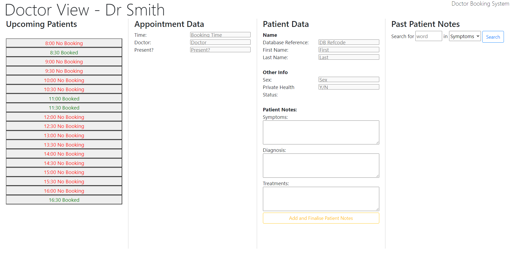
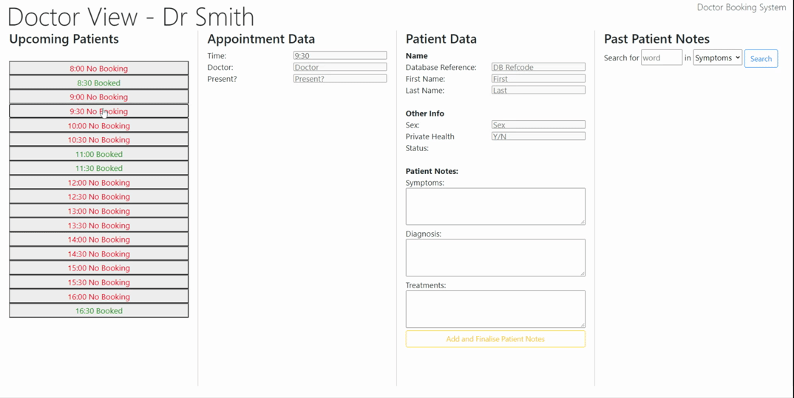

Information for Doctors
Using DBS as a doctor is an easy process. DBS has intentionally been designed to be both lightweight and simple, making it uncluttered and concise without losing out on important functionality.
This guide will walk you through using DBS in your consults, from accessing your bookings for the day to adding detailed, organised patient notes.
The first thing you must do in DBS is log in!
Select your name from the dropdown box, and click 'Log Me In'. No password is required, since DBS should only be accessed on secured computers! It is strongly encouraged that doctors do not use DBS on their personal devices, as it is not secure!
You should now see the doctor main screen:
You have now successfuly logged in to DBS!
Patient bookings lie on the left hand side of the screen. Each timeslot (30mins) is a horizontal strip.
Red rows indicate that no active booking is made at this time.
Green rows indicate that an active booking exists at this time.
Names are not shown in this strip for privacy reasons.
Each of these entries can be clicked on to reveal more information towards the right hand side of the screen.
To examine the details of a particular booking, press on the respective booking button. This will reveal three columns of information:
 GIF animation of populating the screen with booking data.Column 1: Booking Data
This column houses information regarding the administrative details of the booking.
Time is the time that the booking will occur, in 24-hour time.
Doctor is the doctor it is booked with. This should always have your name in it!
Present? is a beta feature which indicates whether the patient is present at the clinic or not.
Column 2: Patient Data
This column houses sensitive data regarding the patient.
'DB Reference' is the technical DB refcode under which the user is stored. This can be used for troubleshooting purposes, but will not be useful in daily operations.
'First Name' and 'Last Name' pertains to the first and last names of the client.
'Sex' is the identified sex of the client.
'Priv. Health?' identifies whether the user has private health cover.
Patient Notes section will be discussed in a later chapter.
Column 3: Past Patient Notes
This holds the past notes from the patient. We will go into more detail on this in the next chapter.
CHAPTER 4: Patient NotesOne of the more powerful aspects of DBS is its patient notes functionality.
Adding Patient Notes
Once a user is selected, the 'symptoms', 'diagnosis' and 'treatment' tabs can be populated. Once your notes are finlised, press 'Add and Finalise Notes'. They are now saved to the system.
Viewing Past Patient Notes
Information for Receptionists
Information for Patients